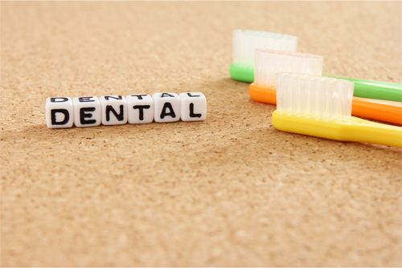
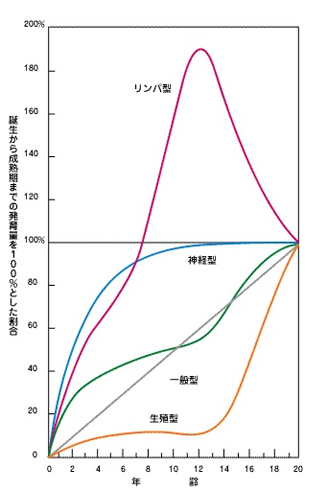

こどもの矯正治療は、なぜいい？Kids Merit
矯正治療はおとなでもこどもでも受けられる治療です。しかし、こどものうちに受けるほうがより多くのメリットを得られます。そこで佐賀県鳥栖市の歯医者「みらい歯科・こども矯正歯科」では、こどものうちに、それも早い時期に矯正治療をはじめることをおすすめしています。
こちらではこどもの矯正治療をするメリット・しないデメリットのほか、おとなの矯正治療との違いなどをご紹介します。
I期治療とII期治療

一般的に、こどもの矯正治療は「I期治療」、おとなの矯正治療は「II期治療」と呼ばれています。I期治療は歯そのものよりも、歯を支えるあごの骨やあご自体の成長に着目して行われ、II期治療では生えそろった永久歯を移動させていきます。これらは連続して行うものと考えられているのが常です。
しかし当院の考えは、これと同じではありません。I期治療とII期治療は別のものであると考え、I期治療、さらにそれより先に行う早期矯正治療に力を入れているのです。
こどもの矯正治療はおとなの矯正治療とどう違う？
こどもの矯正治療とおとなの矯正治療の大きな違いは、「成長があるかないか」です。おとなは骨格や神経・筋肉の成長が完了しており、この点が成長期にあるこどもと異なります。
人間の成長と歯並び

人間は6歳くらいまでに顔・頭・脳が急激に発達し、80％程度完成します。その後6歳から10歳までは成長のスピードが減速して、一旦停滞。そして10歳くらいから再び急速に成長が進み、12歳ころに完了するのです。
6歳ころまでに脳の入れ物になる頭や上あごの骨、中でも鼻から上の部分（中顔面）が一緒に大きくなっていきます。歯は、あごの骨との調和がとれていれば自然にきれいに並ぶため、この時期にこれらをしっかり成長させておくことが大切です。
つまり理論上では、成長期に頭やあごの骨をしっかり成長させ、筋肉や神経と調和がとれれば、歯並びは自然とよくなります。さらに顔つきもはっきりとします。この理論は、成長が完了しているおとなの矯正治療では利用できないものです。当院ではこのような理由から、こどもの矯正治療（I期治療）をおすすめしています。
おとなの矯正治療の実状
成長が完了してから行うおとなの矯正治療では、歯を何本か抜いたり削ったりして、あごに無理やり歯を並べます。歯並びの乱れが大きい場合には、あごの骨を切る手術を行うケースもあります。
これだけ大がかりな治療を行っても、矯正治療後にはある程度「後戻り」を避けられません。後戻りは、こどもの治療にはほとんど見られないものです。
当院がこどもの矯正治療をおすすめする理由～するメリット・しないデメリット～
こどもの矯正治療は成長期に行うことで多くのメリットを得られます。逆にもしこどもの時期に矯正治療をしなかったら、デメリットが生じます。
※表は左右にスクロールして確認することができます。
| こどもの矯正治療をするメリット | しないデメリット |
|---|---|
|
|
このように、こどもの矯正治療はおとなの矯正治療より明らかに多くのメリットがあります。当院では早期矯正治療およびI期治療に力を入れていますので、お気軽にご相談ください。